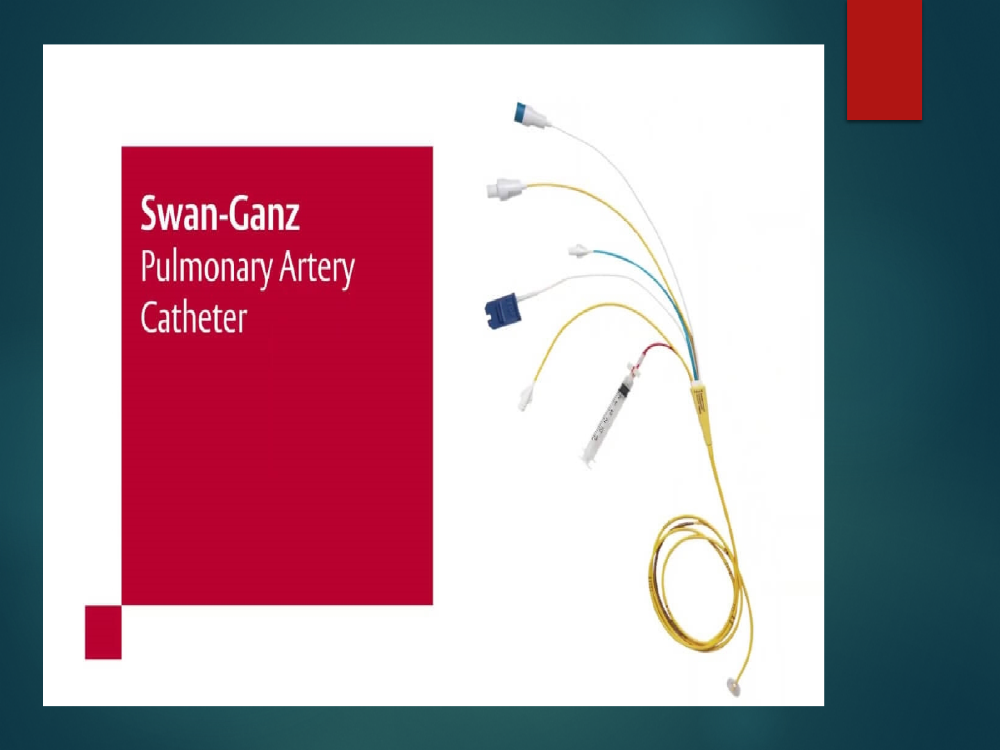
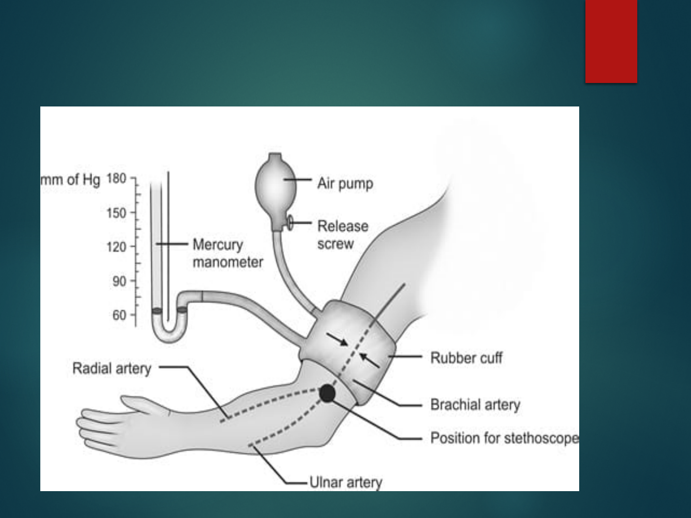

HEMODYNAMIC
MONITORING
SUMITTED TO-
PROF SONIA BEHERA
HOD ,MSN
LJM,CON
SUMITTED BY-
SASWATIKA PANDA
MSC (N) 2
ND
YEAR
LJM,CON

DEFINITION-
HEMODYNAMICS
Hemodynamics are the forces which circulate blood through
the body. Specifically, hemodynamics is the term used to
describe the intra-vascular pressure and flow that occurs when
the heart muscle contracts and pumps blood throughout the
body.
INTRODUCTION

HEMODYNAMIC MONITORING
Hemodynamic monitoring refers to measurement of pressure,
flow and oxygenation of blood within the cardiovascular
system.
Using invasive technology to provide quantitative information
about vascular capacity, blood volume, pump effectiveness
and tissue perfusion.
Hemodynamic monitoring is the measurement and
interpretation of biological systems that describes the
performance of cardiovascular system.

INDICATIONS
Any deficits or loss of cardiac function; such as
myocardial infarction, congestive heart failure and
cardiomyopathy.
All types of shock; cardiogenic shock, neurogenic
shock or anaphylactic shock.
Decreased urine output from dehydration,
hemorrhage, G.I. bleed, burns or surgery.

EQUIPMENTS
Swan-Ganz catheter set
ECG, Monitor and display unit
Defibrillator
Pressure bag
Pressure transducer, Transducer holder
Putdown tray
Syringes: Tuberculin (2.5 ml syringe)
Sterile saline solution

CONT-
Heparin
Antiarrhythmic drugs
Local anesthetics
Skin antiseptics
Elastoplast tape
Sterile drape / Gloves

SET-UP FOR HEMODYNAMIC
PRESSURE MONITORING
Obtain barrier kit, sterile gloves and correct swan catheter.
Also need extra IV pole, transducer holder, boxes and cables.
Check to make sure signed consent is in chart, and that
patient and or family understand procedure.
Everyone in the room should be wearing a mask.
Position patient supine and flat if tolerated. On the monitor,
press“changescreen”button,thenselect“swanganz”to
allow physician to view catheter wave forms which inserting.

DEMO
https://youtu.be/fHux8cV-
Ej4?si=sZuQbhgFc1h9Qy4c


CONT-
Assist physician in sterile draping and sterile set-up for swan
insertion.
Set-up pressure lines and transducers. Level pressure flush
monitoring system and transducers to the phlebo-static axis.
Connect tubing to patient when patient is ready to flush the
swan.
While floating the swan, observe for ventricular ectopy on the
monitor.
After swan is in place, assist with clean up and let patient know
procedure is complete.
Obtain all the values. for cardiac output inject 10 ml of D5w
after pushing the start button.
Perform hemo-calculations.
Document findings in ICU flow sheets.

METHODS OF HEMODYNAMIC
MONITORING -
Arterial Blood Pressure
Non invasive
Intra-arterial blood pressure measurement
Central venous pressure
Pulmonary artery catheter pressure monitoring
1.NON-INVASIVE ARTERIAL BP MONITORING
With manual or automated devices
Methods of measurement:
Oscillometry (most common) :- MAP most accurate , DP least
accurate
Auscultatory
LIMITATIONS
Cuff must be placed correctly and must be appropriately sized.
Auscultatory method is very inaccurate (Korotkoff sound is
difficult to hear).
Significant under estimation in low flow (shock).
Oscillometric also mostly in accurate (>5 mmHg off directly
recorded pressure).
OSCILLOMETRY

Auscultatory

CONT-
DIRECT INTRA ARTERIAL BP
MONITORING
Intra-arterial BP monitoring is used to obtain
direct and continuous BP measurements in
critically ill patients who have severe
hypertension or hypotension.

CONT-
PROCDURE
Once an arterial site is selected (radial, brachial, femoral or
dorsalis pedis), collateral circulation to the area must be
confirmed before the catheter is placed.
This is a safety precaution to prevent compromised arterial
prefusion to the area distal to the arterial catheter insertion
site. If no collateral circulation exists and the cannulated
artery became occluded, ischemia and infarction of the area
distal to that artery could occur.
Collateral circulation to the hand can be checked by the
Allen test.

CONT-
With the Allen test, the nurse compresses the radial and
ulnar arteries simultaneously and asks the patient to make
a fist, causing the hand to blanch.
After the patient opens the fist, the nurse releases the
pressure on the ulnar artery while maintaining pressure
ontheradialartery.Thepatient’shandwillturnpinkif
the ulnar artery is patent

CONT-
COMPLICATIONS
Local destruction with distal ischemia
External hemorrhage
Massive ecchymosis
Dissection
Air embolism
Blood loss
Pain
Arteriospasm
Infection

NURSING INTERVENTIONS
Before insertion of a catheter, the site is prepared by shaving if necessary
and by cleansing with an antiseptic solution. A local anesthetic may be
used.
Once the arterial catheter is inserted, it is secured and a dry, sterile dressing
is applied.
The site is inspected daily for signs of infection. The dressing and pressure
monitoring system or water manometer are changed according to hospital
policy.
In general, the dressing is to be kept dry and air occlusive.
Dressing changes are performed with the use of sterile technique.
Arterial catheters can be used for infusing intravenous fluids, administering
intravenous medications, and drawing blood specimens and in addition to
monitoring pressure.
After locating this position, the nurse may make an ink mark on the chest.

2. CENTRAL VENOUS PRESSURE
MONITORING
The CVP, the pressure in the vena cava or right
atrium, is used to assess right ventricular function
and venous blood return to the right side of the
heart.
The CVP can be continuously measured by
connecting either a catheter positioned in the vena
cava or the proximal port of a pulmonary artery
catheter to a pressure monitoring system

PROCEDURE
Before insertion of a CVP catheter, the site is
prepared by shaving if necessary and by cleansing
with an antiseptic solution.
A local anesthetic may be used. The physician
threads a single lumen or multi lumen catheter
through the external jugular, antecubital, or
femoral vein into the vena cava just above or
within the right atrium.

NURSING INTERVENTIONS
Once the CVP catheter is inserted, it is secured and a dry, sterile
dressing is applied.
Catheter placement is confirmed by a chest x-ray, and the site is
inspected daily for signs of infection. The dressing and pressure
monitoring system or water manometer are changed according to
hospital policy.
In general, the dressing is to be kept dry and air occlusive.
Dressing changes are performed with the use of sterile technique.

NURSING INTERVENTIONS
CVP catheters can be used for infusing intravenous fluids,
administering intravenous medications, and drawing blood
specimens in addition to monitoring pressure.
To measure the CVP, the transducer (when a pressure monitoring
system is used) or the zero mark on the manometer (when a water
manometer is used) must be placed at a standard reference point,
called the phlebostatic axis.
After locating this position, the nurse may make an ink mark on
the chest.

PULMONARY ARTERY PRESSURE
MONITORING
Pulmonary artery pressure monitoring is an important tool
used in critical care for assessing left ventricular function,
diagnosing the etiology of shock, and evaluating the
patient’sresponsetomedicalinterventions(e.g.,fluid
administration, vasoactive medications).
Pulmonary artery pressure monitoring is achieved by using
a pulmonary artery catheter and pressure monitoring
system.

PULMONARY ARTERY CATHETER
Development of the balloon-tipped flow directed
catheter has enabled continuous direct monitoring of PA
pressure.
Pulmonaryarterycatheterisotherwiseknownas“swan-
ganzcatheter”.
Components of catheter are :-
Balloon port
CVP port
PA port

INSERTION OF PAC
PA monitoring must be carried out in a critical care unit
under careful scrutiny of an experienced nursing staff.
Before insertion of the catheter, explain to the client that;
The procedure may be uncomfortable but not painful.
A local anesthetic will be given at the catheter insertion site.
Support of the critically ill client at this time helps promote
cooperation and lessen anxiety.

PROCEDURE
This procedure can be performed in the operating room or cardiac
catheterization laboratory or at the bedside in the critical care unit.
Catheters vary in their number of lumens and their types of
measurement (e.g., cardiac output, oxygen saturation) or pacing
capabilities.
All types require that a balloon-tipped, flow-directed catheter be
inserted into a large vein (usually the subclavian, jugular, or femoral
vein); the catheter is then passed into the vena cava and right atrium.
In the right atrium, the balloon tip is inflated, and the catheter is carried
rapidly by the flow of blood through the tricuspid valve, into the right
ventricle, through the pulmonic valve, and into a branch of the
pulmonary artery.

CONT-
During insertion of the pulmonary artery catheter, the bedside monitor
is observed for waveform and ECG changes as the catheter is moved
through the heart chambers on the right side and into the pulmonary
artery.
When the catheter reaches a small pulmonary artery, the balloon is
deflated and the catheter is secured with sutures.
Fluoroscopy may be used during insertion to visualize the progression
of the catheter through the heart chambers to the pulmonary artery.
After the catheter is correctly positioned, the following pressures can
be measured.

NORMAL RESULTS
Normal pulmonary artery pressure is 25/9 mm Hg,
with a mean pressure of 15 mm Hg.
Pulmonary capillary wedge pressure is a mean
pressure and is normally 4.5 - 13 mm Hg.

NURSING INTERVENTIONS
Catheter site care is essentially the same as for a CVP catheter. As in
measuring CVP, the transducer must be positioned at the phlebostatic
axis to ensure accurate readings.
The nurse who obtains the wedge reading ensures that the catheter
has returned to its normal position in the pulmonary artery by
evaluating the pulmonary artery pressure waveform.
The pulmonary artery diastolic reading and the wedge pressure
reflect the pressure in the ventricle at end-diastole and are
particularly important to monitor in critically ill patients, because
they are used to evaluate left ventricular filling pressures (preload).

CONT-
At end-diastole, when the mitral valve is open, the wedge
pressure is the same as the pressure in the left atrium and the
left ventricle, unless the patient has mitral valve disease pr
pulmonary hypertension.
Critically ill patients usually require higher left ventricular
filling pressures to optimize cardiac output. These patients
may need to have their wedge pressure maintained as high
as 18 mm Hg

COMPLICATIONS
Infection
Pulmonary artery rupture
Pulmonary thrombo-embolism
Catheter kinking
Dysrrhythmias
Air embolism

RESEARCH RELATED STUDY-
Abstract
Hemodynamic monitoring is the centerpiece of patient monitoring in acute care
settings. Its effectiveness in terms of improved patient outcomes is difficult to
quantify. This review focused on effectiveness of monitoring-linked resuscitation
strategies from:
(1) process-specific monitoring that allows for non-specific prevention of new
onset cardiovascular insufficiency (CVI) in perioperative care. Such goal-directed
therapy is associated with decreased perioperative complications and length of
stay in high-risk surgery patients.
(2) Patient-specific personalized resuscitation approaches for CVI. These
approaches including dynamic measures to define volume responsiveness and
vasomotor tone, limiting less fluid administration and vasopressor duration,
reduced length of care.
(3) Hemodynamic monitoring to predict future CVI using machine learning
approaches. These approaches presently focus on predicting hypotension. Future
clinical trials assessing hemodynamic monitoring need to focus on process-specific
monitoring based on modifying therapeutic interventions known to improve
patient-centered outcomes.
Crit Care. 2022; 26: 294. Published online 2022 Sep 28.
PMCID: PMC9520790PMID: 36171594

SUMMARY

CONCLUSION

REFERENCES-
Kloerwoltes, Wilkins & Williumlipin Colt, Manuals of
Nursing Practice, 9
th
edition, New Delhi, Who Klowee
India Pvt. Ltd.: 2009.
Basavanthapa BT, Medical Surgical Nursing, 2
nd
edition,
New Delhi, Jaypee Brother Publishers (P) Ltd., 2009.
Clement I. Text Book Of Nursing Foundation, Second
Edition Ed. Bangladesh: Jaypee
Brothers Medical Publishers(P) Ltd; 2017